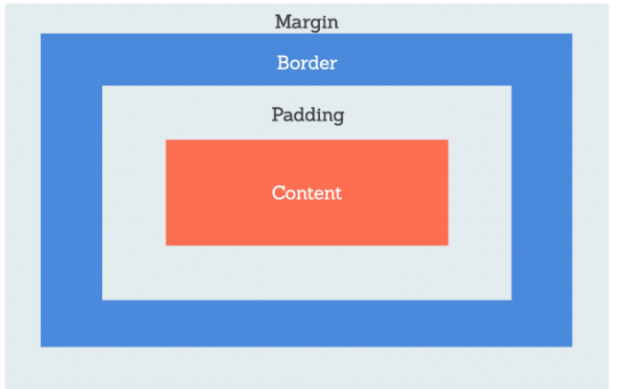

Prework Study Guide

✨ Open the Console to See What's Happening ✨
HTML
- HTML or Hypertext Markup Language gives content structure. It is like the framework of a house.
- The head element contains information about the webpage.
- The body element repressents the visible content shown to the user.
CSS
- Inline CSS - Applies to specific HTML tag to style a particular element only.
- inline CSS is Uueful for quick and permanent changes but less flexible than external and internal style sheets, as they must be edited individually to make a design change.
- Internal Style Sheet - Allows you to embed and entire style sheet directly in the HTML fie. Use style in the head element.
- internal style sheet is page specific as rules only apply to that page, and you can configure CSS classes and ID's which are used to identify elements, to style multiple elements in the page code.
- External CSS Style Sheet - Most common and preferred method.
- external CSS style sheets keeps all CSS rules in a seperate file making design changes easier.
- These are done by using a link element in the HTMLS head.
- Margin: Indicates how much space we want around the outside of an element. It is not visible on the page as it merely adds a buffer.
- Padding: Often confused with Margin but is not the same thing. Padding adds space around the content INSIDE an element which makes the entier element bigger since it is on the inside.

Git
- git Status: Checks what branch we are currently on
- git checkout -b branch-name: creates a new branch and switches to it
- git add: adds modifications in the current working branch to the staging area.
- -A after git add will add all changes
- git commit -m "message here": commits the changes with -m adding a message about the changes
- git pull origin main: allows you to doublecheck if our local branch is in sync.
- Pull command recieves a branch's modifications into the local environment, origin indicates the source of the pull in github repo, and main indicates the branch
- git push origin feature branch name: oushes the changes we have local to our remote GitHub branch. After this point you can see the compare & pull request in github
JavaScript
- A variable is a named container that allows us to store data in our code.
- Control flow is the order in which a computer executes code in a script.
- javascript is read from top to bottom and order counts!
- If statements allow us to interupt the flow.
- Strings - Marked wtih " "
- All lines of Javascript end with;
- To declare a variable use the Var keyword and the name follows after.
- The console log is a test environment that developers use to check code.
- If statements will only execute if the statement meets a specific condition.
- A value is considered a fasly is it is one of the following - "0, -0, On, " ", null, undefined, NaN, or a Boolean Data type with value of false."
- === Is a strict equality operator and it checks to see if two values are equal, and then returns a Boolean result true if equal and false if not.
- An Array is a single variable that is used to hold a group of data. Usually data that is related in some way.
- Arrays are useful tools for storing multiple items wiht different data types in a single variable, but not all arrays must have multiple data types.
- an Index is the location of the data item in the array and is idenitifed as a unique number.
- The first number in an index is always 0
- To access data in an array that is indexed, start with the name of the var and then add the index of it tothe end of the array name in squar brackets. i.e shapes[0];
- For loops use the predictable patter of indices to perform a task on all the items in an arry by allowing a single code block to be executed over and over.
- For loops contains three important steps - 1. determine the starting point of the loop. 2. Set the condition. 3. The Final Statelemt
- x++ is a shortcut way of writing x+1
- A function is a set of instructions that tells the computer how to perform a certain task. Functions do not automatically execute when Javascript is run and must be called in order to execute.
- Math.floor() and Math.random() are both properties of JavaScripts built-in math object that can be used togeather to generate a random number.